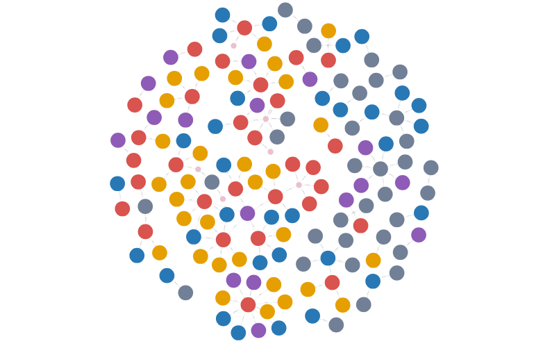
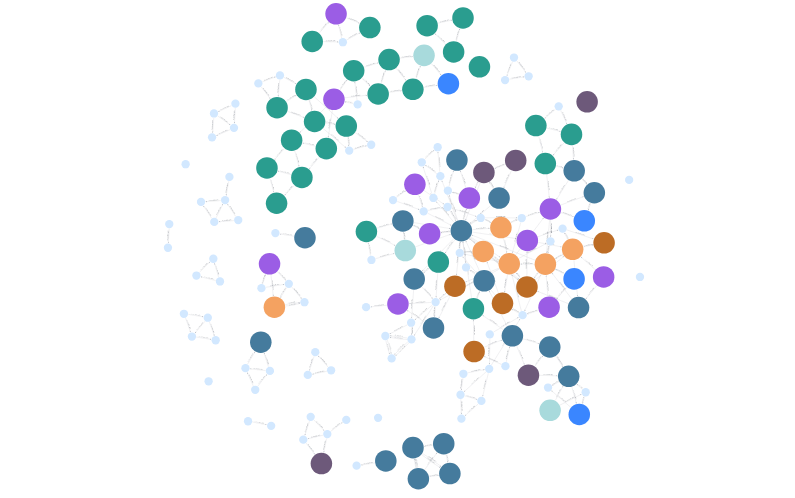
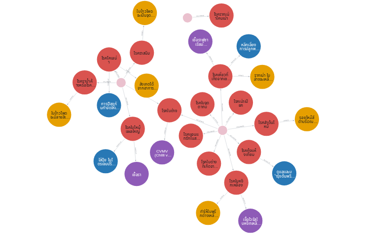

กราฟ Neo4j ทั้ง 3 วิธี
ข้อมูลจาก PDF เดียวกัน 48 หน้า · กราฟแยกตามวิธี · export อ่านกลับจาก Neo4j จริง
Model I · langchain_neo4j.Neo4jGraph
150 nodes · 120 relationships
Actual Neo4jGraph.query ingestion; cached Qwen3.5 9B extraction from all pages. Adapted schema-controlled extraction replaces LLMGraphTransformer. No source-review additions.
ดาวน์โหลดจาก Neo4j Browser โดยตรง: Graph SVG (เต็ม) · Graph PNG (เต็ม)

Graph PNG · Table HTML · Table PDF · Nodes CSV · Relationships CSV · Raw JSON · Raw viewer · GraphML · Cypher
Model II · GraphDatabase + ThaiNameTagger
160 nodes · 254 relationships
Real ThaiNameTagger 1.4 CPU NER and regex. Nearby entities connected as CO_OCCURS_WITH; this is not a factual disease/location relation. Worksheet software dictionary has no relevance to plant PDF and is omitted. Final BIO entity is flushed.
ดาวน์โหลดจาก Neo4j Browser โดยตรง: Graph SVG (เต็ม) · Graph PNG (เต็ม)

Graph PNG · Table HTML · Table PDF · Nodes CSV · Relationships CSV · Raw JSON · Raw viewer · GraphML · Cypher
Model III · Neo4j_Create plant disease schema
31 nodes · 29 relationships
New Qwen3.5 9B extraction using crop/disease/pathogen/symptom/treatment schema, all 48 pages; explicit-name validation. GraphDatabase ingestion. No manually added facts.
ดาวน์โหลดจาก Neo4j Browser โดยตรง: Graph SVG (เต็ม) · Graph PNG (เต็ม)

Graph PNG · Table HTML · Table PDF · Nodes CSV · Relationships CSV · Raw JSON · Raw viewer · GraphML · Cypher